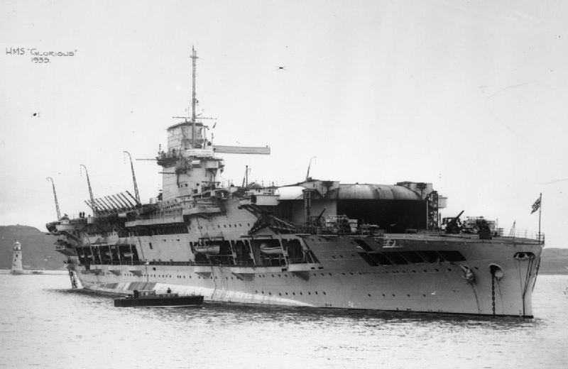
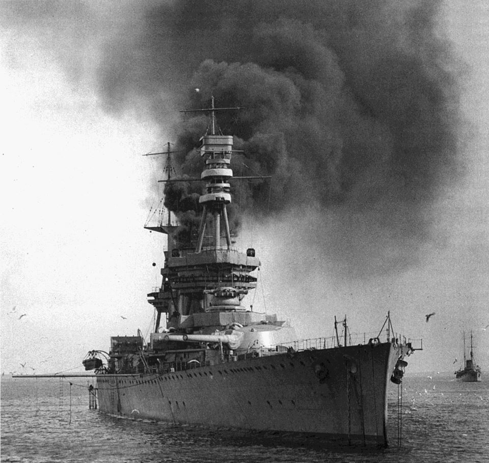
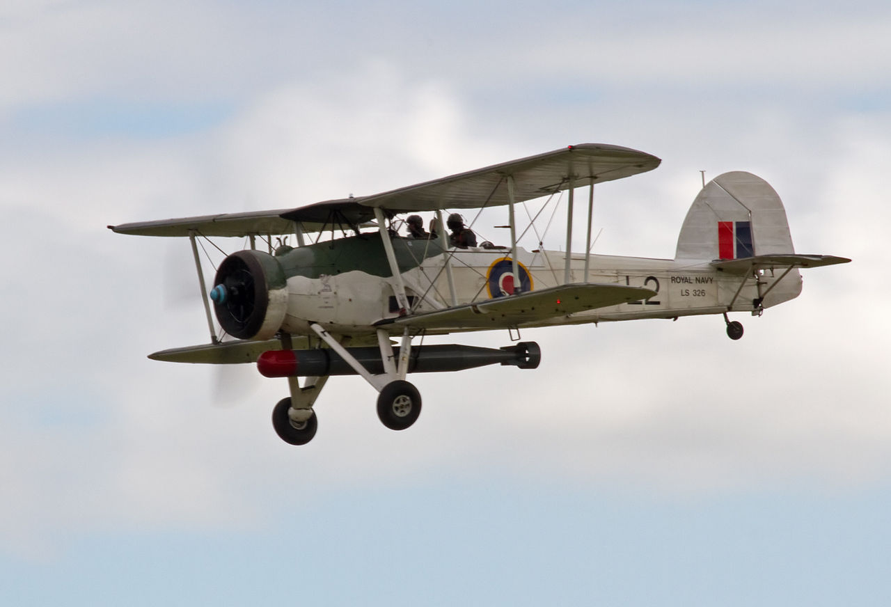
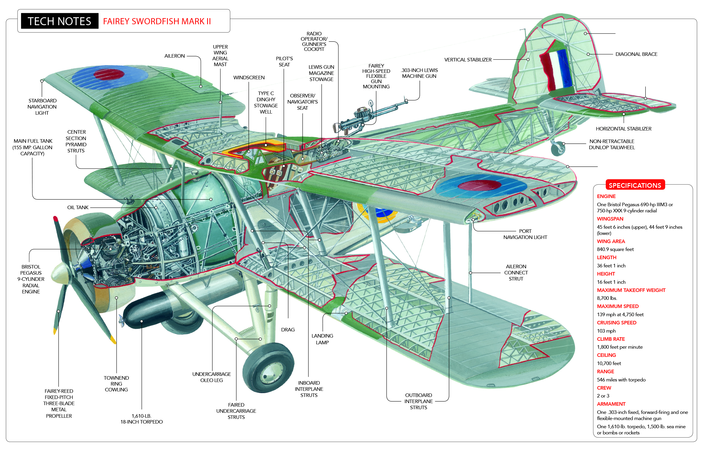
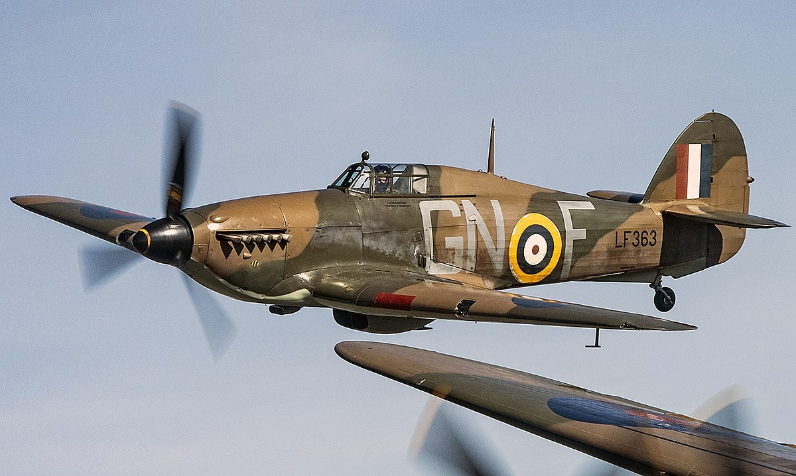
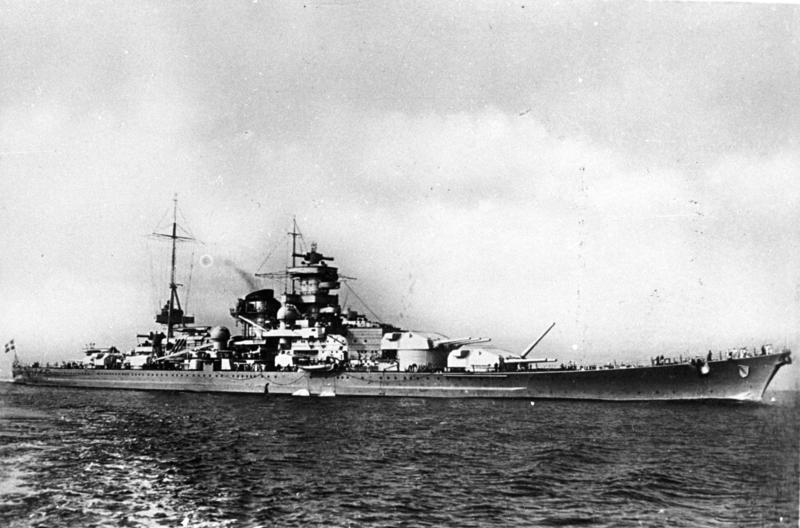
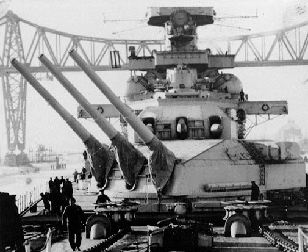
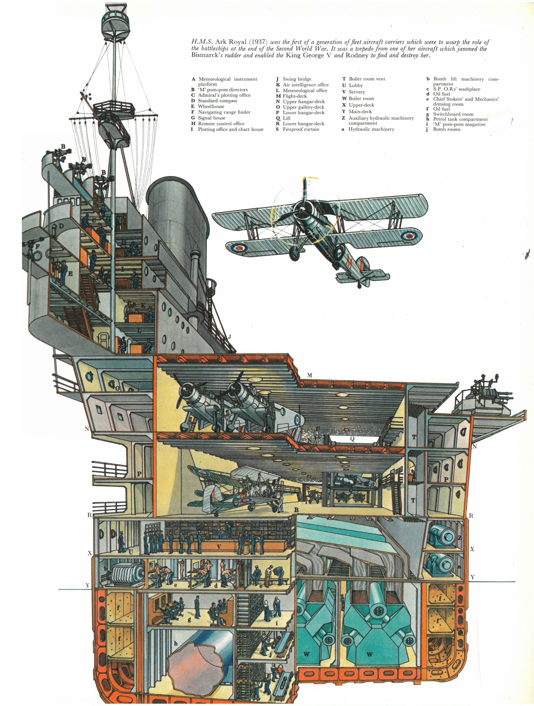
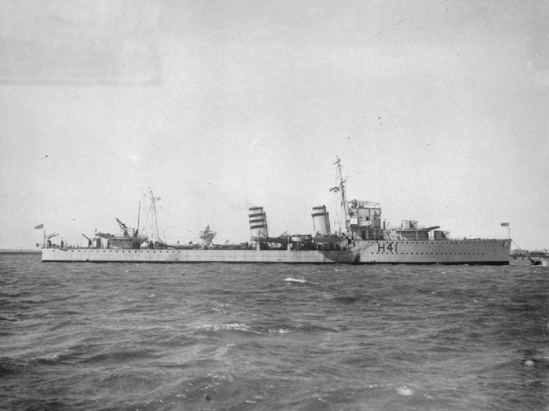

항공모함 킬러의 전설 - HMS Glorious 이야기
게시: 2020-10-15T06:30:24+09:00
느린 호위 항모가 아닌 정규 항모를 전함이 함포로 격침시키는 것은 일반적으로 불가능에 가깝습니다. 이유는 크게 3가지입니다. 1) 정규 항모의 함재기의 공격 범위가 전함의 함포 사거리보다 엄청나게 길다 2) 정규 항모는 최소한 전함만큼 빠르거나 보통 더 빠르다 3) 정규 항모는 보통 전함과 순양함들의 호위를 받는다 그런데 이 불가능한 업적을 이룬 전함이 있습니다. 바로 독일의 전함(또는 전투순양함)인 샤른호스트(Scharnhorst)입니다. 1940년 6월 8일 노르웨이 인근에서 샤른호스트는 영국 정규 항모 글로리어스(HMS Glorious)를 격침합니다. 샤른호스트는 위의 3가지 불가항력을 어떻게 다 극복했을까요? 샤른호스트가 잘 했다기보다는 글로리어스의 함장이 바보짓을 너무 많이 저질렀고, 거기에 운도 억수로 나빴습니다.

(항공모함 글로리어스입니다. 약 2만톤급으로서 원래 전투순양함(battlecruiser, 이걸 순양전함으로 불러야 한다는 이야기도 있으나 스타크래프트 한글판에서 전투순양함으로 불렀으니 저는 그냥 그렇게 부릅니다)이었다가 1924년도에 항공모함으로 개장되었습니다. 최대 48대의 함재기를 탑재할 수 있었으나, 그건 당시의 작은 비행기들에 해당하는 것이었고, 제2차 세계대전 때의 큰 항공기들은 훨씬 적게 실어야 했습니다.)

(1924년 아직 전투순양함 시절의 HMS Glorius 입니다.)
당시 글로리어스는 알파벳 작전(Operation Alphabet)이라는 영국의 노르웨이 원정군 철수 작전에 참여하고 있었습니다. 글로리어스의 역할은 노르웨이 나르빅(Narvik)의 임시 항공기지에서 영국 공군기들을 철수시키는 것이었지요. 글로리어스는 원래 1916년에 전투순양함으로 진수되어 제1차 세계대전에 참전했다가 1920년대 후반에 항공모함으로 개조된 낡은 기술의 군함이었고, 함재기들도 뇌격기(Swordfish)나 전투기(Gladiator)나 모두 느린 쌍엽기였습니다. 그런데 노르웨이 나르빅(Narvik)에서 철수해야 하는 공군기들은 복엽기인 글라디에이터도 있었지만 현대식 단엽기인 허리케인(Hawker Hurricane)도 포함되어 있었습니다. 애초에 이 전투기들도 글로리어스가 싣고 간 것이었습니다만, 영국에서 실을 때는 크레인으로 전투기들을 실어올렸었지요.
 
(제1차 세계대전의 look & feel을 가진 제2차 세계대전 당시 영국 뇌격기 소드피쉬(Fairey Swordfish)입니다. 1934년에 개발된 이 복엽기는 1939년 제2차 세계대전이 발발하자마자 이미 낡은 기술의 군용기가 되어버려 곧 퇴역될 거라고 다들 예상했으나 뜻 밖에 여러가지 기록을 세우며 전쟁 말기까지 현역 생활을 했습니다.
1) 전쟁 내내 가장 많은 톤수의 추축국 함선을 격침시킨 단일 기종 2) 1940년 봄 노르웨이에서 독일 구축함에 어뢰를 명중시킨 것이 제2차 세계대전 중 최초의 공중 어뢰 명중탄 3) 역시 1940년 봄 노르웨이에서 독일 잠수함을 발견하고 급강하 폭격 실시, 명중 및 격침시킨 것이 영국 해군 항공대의 첫번째 U보트 격침 4) 1940년 7월 6일 알제리 Mers-el-Kébir의 프랑스 해군을 2차 공격할 때 전함 뒹케르크(Dunkerque)를 대파시키는 등 맹활약. 이것이 영국 해군 최초로 함포를 쏘지 않고 승리한 첫 해전. 5) 1940년 8월, 리비아 해안에서 3대의 소드피쉬가 어뢰 3발을 사용하여 4척의 독일 선박 (2척의 U보트, 1척의 구축함, 1척의 보급함)을 파괴. 3석4조의 진기록. 6) 1940년 11월, 이탈리아 타란토 항에 야습을 가해 전함 3척과 순양함 2척, 구축함 2척을 격침 내지는 대파. 항공기만으로 함대 전체를 괴멸시킨 최초의 사건. 7) 1941년 지중해 말타 섬에서 27대의 소드피쉬가 9개월간 약 45만톤의 추축국 선박을 격침. 이 모든 것이 독일 메서슈미트 전투기의 엄호 하에서 벌어짐. (그걸 피하려 야간에 주로 활동) 8) 1941년 5월 독일 전함 비스마르크의 키를 망가뜨려 격침에 기여. 당시 소드피쉬가 너무 속도가 느려 최신 전투기의 속도에 맞춰진 비스마르크의 화기관제장치가 너무 앞쪽을 겨냥하도록 하는 바람에 피해가 없었음. 9) 1941년 12월, 레이더를 장착한 소드피쉬가 야간에 U보트를 탐지, 공격하여 격침. 이것이 최초의 항공기에 의한 야간 대잠 작전 성공 사례. 10) 1942년 소련으로 군수물자를 실어나르는 북극해 수송작전에서 대잠초계기로 활약. 한번은 두척의 소형 호위항모(1만4천톤급, 최대시속 18노트 느림보)에서 출격한 24대의 소드피쉬들이 하루 100시간의 비행시간을 10일간 강행했음. 11) 1942년 2월, 독일 전함 샤른호스트(Scharnhorst)와 그나이제나우(Gneisenau)가 도버해협을 가로질러 독일 항구 쪽으로 향하자 그를 격침하기 위해 6대의 소드피쉬 출격. 그러나 독일 공군 메서슈미트 전투기의 요격을 받고 소드피쉬 전멸. 이후 뇌격기로서의 역할은 중단되고 폭뢰와 로켓을 장착하고 대참 초계기로 주로 사용됨. 12) 1943년 5월, 소드피쉬가 아일랜드 근해에서 로켓탄으로 U보트를 격침. 이것이 로켓탄에 의해 잠수함이 격침된 최초의 사례.)

(당시 글로리어스의 함재 전투기였던 글라디에이터입니다. 물론 메서슈미트 같은 것과 맞붙으면 상대가 되지 못했습니다.)

(그나마 제2차 세계대전 전투기처럼 보이는 허리케인입니다.)
알파벳 작전은 사실상 걸음아 날 살려라 도망치는 작전이었으므로 항구 부둣가에 항공모함을 대고 전투기들을 크레인으로 실어올릴 상황이 아니었습니다. 결국 공군 전투기들은 글로리어스의 갑판에 착륙을 해야 했는데, 공군 전투기들은 함재기가 아니었으므로 tail hook도 없었고 글로리어스의 짧은 비행 갑판에 착륙하기에는 착륙 속도가 너무 빨랐습니다. 하지만 궁하면 통한다고, 허리케인 조종사들은 전투기 뒤편에 모래주머니를 잔뜩 싣고 날아올라 아무 사고 없이 무사히 착륙할 수 있었습니다. 이건 tail hook 없는 단엽기가 항공모함에 착륙한 최초의 사례였습니다. 당시 함장인 도일리-휴즈(Guy D'Oyly-Hughes)는 원래 잠수함 요원으로 복무하다 항모를 맡은 사람으로서 글로리어스 함장으로 취임하기 전에는 글로리어스와 동급 항모인 코레이져스(HMS Courageous)에서 부함장(executive officer)으로 10개월 근무한 것이 전부였던, 항모 경험이 짧은 사람이었습니다. 게다가 글로리어스의 비행단장과 작전 관련 불화가 있어서 비행단장은 스카파 플로우에 남겨둔 상태였습니다. 도일리-휴즈가 그 전 작전에서 노르웨이 해안 폭격을 명하자, 비행단장은 '목표물이 불분명한데다 느린 소드피쉬로는 부적합한 임무'라며 거부했었거든요. 지나치게 서둘러 본 함대와 떨어져 단지 2척의 구축함(HMS Ardent와 HMS Acasta)만 거느리고 먼저 스카파 플로우로 향했던 것도 이 비행단장의 군법회의를 서둘러 진행하려는 욕심에서였다고 합니다. 진짜 문제는 그러다보니 바보처럼 아무런 CAP(Combat Air Patrol)을 안 띄워놓았다는 것입니다. 뇌격기든 전투기든 CAP을 띄워놓았다면 다가오는 독일 함대를 훨씬 먼저 파악할 수 있었을 것이고, 뇌격기를 보내 공격하든 전속력으로 도망치든 선택을 할 수 있었을 것입니다. 당시 글로리어스에는 착함한 공군기 글라디에이터 10대와 허리케인 10대 외에, 자체 함재기인 해군용 글라디에이터 9대와 소드피쉬 5대가 있었습니다. 이들은 모두 격납고에 들어있었고, 아무런 긴급 이륙 준비가 되어 있지 않았습니다.

(주포는 11.1인치로서 전함이라는 소리를 듣기에는 좀 창피한 수준이었지만 빠른 속력으로 영국-소련 사이의 보급로를 위협하며 영국 해군에게 골치거리를 안겨주었던 샤른호스트입니다. 결국 영국 전함 HMS Duke of York의 매복에 걸려 격침당합니다.)
주노 작전(Operation Juno)라는 작전명 하에 노르웨이 전역을 습격하러 나왔던 샤른호스트와 그나이제나우의 두 전함은 영국군이 철수하면서 할 일이 없어졌으나 그래도 뭔가 사냥할 것이 있지 않을까 하고 자발적으로 인근 해역을 수색 중이었습니다. 샤른호스트는 전함답게 견시병이 상주하는 감시 전망대의 높이가 높다보니 15:46에 먼저 글로리어스의 연기를 보고 그 위치를 파악한 뒤 달려왔습니다. 그에 비해 글로리어스의 전망대에는 견시병도 배치되어있지 않았고. 그 호위함인 구축함들은 마스트가 낮다 보니 16:00이 넘어서야 샤른호스트를 파악했으며 그나마 그게 적함인지 아군함인지도 몰랐습니다. 함재기들이 격납고에 있다보니 일단은 2척의 호위 구축함 중 1척을 보내 그 배의 정체를 밝히도록 했습니다. 치명적으로, 그러면서도 항로를 바꾸지도 않았고 속도를 높이지도 않았습니다. 당시 글로리어스의 최대 속도는 30노트, 샤른호스트는 31노트로서, 그때라도 죽어라 달렸으면 샤른호스트는 쉽게 글로리어스를 따라잡지 못했을 것입니다.

(전설 속에 등장하는 항공모함 킬러, 샤른호스트의 주포입니다. 저렇게 포탑에서 튀어나온 포신과 포탑 구멍 사이에 둘러쳐진 헝겊 같은 것은 정말 헝겊으로서 주로 캔버스 천으로 만들었습니다. 저걸 보통 blast bag이라고 불렀는데, 주용도는 파도와 비, 그리고 함포 사격시 나오는 불똥 등이 포탑 안으로 들어오는 것을 막는 것이었습니다. 일부에서는 고무로 만들기도 했는데, 미국 전함의 경우에는 타이어 회사인 굿이어에서 저 blast bag을 만들기도 했습니다. 미국 전함 펜실바니아 호는 저 blast bag을 가죽으로 만들어 붙이기도 했으나 소금물에 가죽이 금새 너덜너덜해져서 결국 다시 고무로...)
무려 20분이 지난 16:20에야 전투 위치 명령이 내려지면서 5기의 소드피쉬 뇌격기들을 갑판으로 끌어올려 이륙 준비를 시켰습니다. 그런데 16:27에 샤른호스트로부터 첫 사격이 구축함에게 가해졌고, 5분 뒤인 16:32부터는 더 큼직한 목표물인 글로리어스에게 포격이 가해지기 시작했습니다. 이런 비상 상황에서 소드피쉬 뇌격기들이 서둘러 막 이륙하려던 16:38에, 샤른호스트의 11.1인치 포탄이 무려 24km 거리에서 놀랍게도 명중탄을 냈습니다. 이건 1달 뒤인 1940년 7월 9일 영국 전함 HMS Warspite가 칼라브리아(Calabria) 해전에서 이탈리아 해군 전함 쥴리오 체사레(Giulio Cesare)를 상대로 기록한 것과 동일한, 인류 역사상 움직이는 타겟을 상대로 기록한 전함의 최장거리 명중탄이었습니다. 이 회심의 럭키 샷은 하필 비행갑판 앞쪽에 명중해서 갑판을 뚫고 격납고에서 폭발했습니다. 이때 이륙하려던 소드피쉬 2대가 파괴되고 갑판에 구멍이 뚫리면서 모든 함재기들의 이륙이 불가능해졌습니다. 게다가 더욱 치명적이었던 것은 격납고에서 폭발한 포탄의 파편이 기관실까지 날아들어가 보일러에 구멍을 냈고, 이 때문에 증기가 빠지면서 글로리어스의 속도가 뚝 떨어졌습니다. 이후로는 샤른호스트의 일방적 파운딩... 샤른호스트의 명중탄이 결코 독일해군의 우수한 포술 솜씨가 아니라 럭키샷이었다는 것은 두번째 명중탄이 무려 20분 뒤인 16:58에야 나왔다는 사실로 증명되는데, 운수 사납게도 이 두번째 명중탄은 함교에 명중하여 함장과 핵심 참모들을 몰살시켰습니다. 호위 구축함들은 미친 듯 연막 스크린을 쳐댔으나 그것이 충분히 짙어져 글로리어스를 가려준 것은 그 이후였습니다.

(이건 Courageous급 항모인 HMS Glorious가 아니라 HMS Ark Royal입니다. 1937년에 진수된 아크 로열은 글로리어스처럼 원래 전함 또는 전투순양함에서 개조된 것이 아니라 처음부터 항공모함으로 설계된 본격적인 항공모함이었습니다. 따라서 글로리어스보다 약간만 더 큰 2만2천톤급 체구에 글로리어스의 최대 48대보다 훨씬 많은 최대 72대의 함재기를 실을 수 있었습니다. 글로리어스도 아크로열처럼 2층의 격납고를 가졌습니다.
이 단면도에는 꽤 중요한 영국 해군의 기밀 정보도 있습니다. 뱃바닥 왼쪽에 보면 h라고 표시된 커다란 하수도관처럼 생긴 구조물이 보입니다. 이건 함재기 연료인 가솔린 탱크인데, 당시 다른 나라의 항공모함들은 별 생각없이 항모 엔진용 연료인 중유 탱크처럼 가솔린 탱크도 그냥 선체의 일부 칸에 통합해서 만들었습니다. 그에 비해 영국 해군 항모들은 위 그림처럼 별도의 실린더형 탱크를 만들고 그 실린더 탱크가 들어있는 선체의 칸에 바닷물을 가득 채웠습니다. 이는 물을 이용하여 충격을 완화하려는 설계였습니다. 이 비밀은 1940년까지 동맹국인 미국에게도 가르쳐 주지 않았다고 합니다. 이를 몰랐던 미해군과 일본 해군은 항공모함이 피격될 때의 충격으로 가솔린 탱크에 작은 균열이 생기고 거기서 흘러나온 가솔린이 기화되면서 결국 대폭발을 일으키는 사고를 몇차례 겪었습니다. USS Lexington, USS Wasp, 그리고 일본해군 디이호도 다 그런 식으로 치명적이지 않은 피격에 의해 대폭발을 일으켜 침몰되었습니다.)
결국 글로리어스는 17:40에 침몰했고, 글로리어스를 위해 자신을 희생해가며 용감하게 전함 2척과 싸우던 호위 구축함 2척도 모두 침몰했습니다. 당시만 해도 그런 망망대해에서 소함대가 모조리 격침되면 격침시킨 적함들이 와서 구해주는 것이 상식이었지만, 당시 샤른호스트와 그나이제나우는 글로리어스의 구조 요청 무전을 받은 근처의 영국 해군 함대가 곧 몰려올거라고 보고 구조활동 없이 그대로 도주했습니다. 그러나 아무도 오지 않았습니다. 영국 함대는 구조 요청은 커녕 글로리어스가 격침되었다는 소식을 독일 신문 발표를 보고 알았으며, 이틀 뒤 지나가던 노르웨이 화물선 등이 몇 명의 생존자들을 건져 올렸습니다. 글로리어스가 침몰할 때 대략 900여 명이 바다에 뛰어들었다고 추산되는데, 총 40명이 이런 식으로 띄엄띄엄 지나가던 화물선이나 독일 정찰 비행정에 의해 구조되었고, 글로리어스에서 1,207명, 아카스타에서 160명, 아던트에서 152명 등 3척의 배에서 총 1,519명이 사망했습니다. 여기서는 자세히 적지 않았지만 2척의 호위 구축함 아카스타와 아던트는 글로리어스를 구하기 위해 말도 안되는 전력차를 딛고 정말 용감히 싸워 결국 샤른호스트에게 어뢰 1발을 명중시켰습니다. 그들의 활약이 너무 용감하여, 샤른호스트와 그나이제나우의 독일 수병들은 나중에 모항구의 자신들의 막사들의 이름을 이 구축함들의 전사자들을 기리기 위해 아카스타와 아던트로 붙였다고 합니다.

(HMS Ardent입니다. 1400톤급의 구축함입니다. 샤른호스트의 1/20 수준이네요.) Source : en.wikipedia.org/wiki/HMS_Glorious
en.wikipedia.org/wiki/Operation_Juno
https://en.wikipedia.org/wiki/HMS_Ardent_(H41)
en.wikipedia.org/wiki/Battle_of_Calabria
en.wikipedia.org/wiki/Operation_Alphabet
en.wikipedia.org/wiki/German_battleship_Scharnhorst